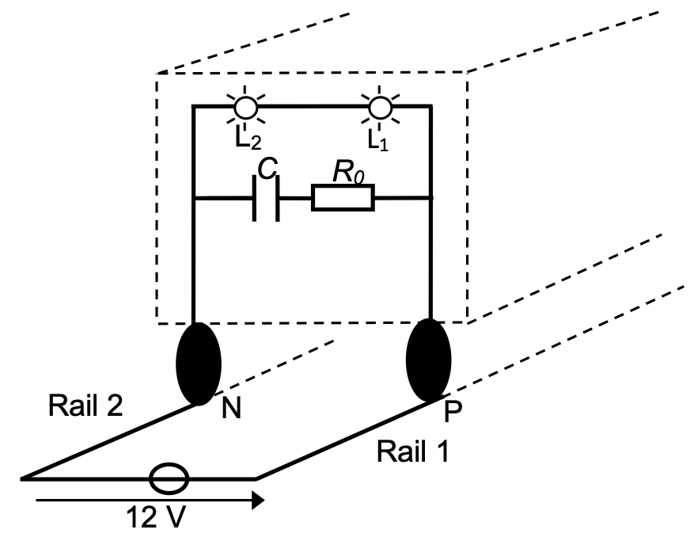
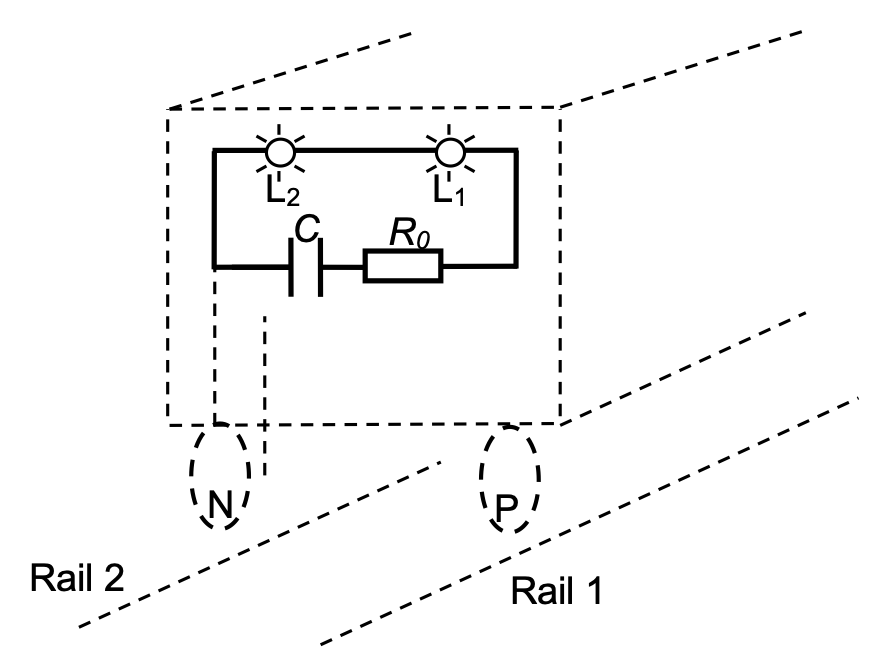
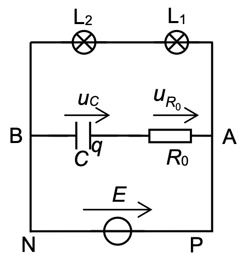
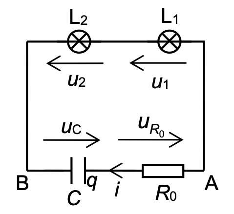
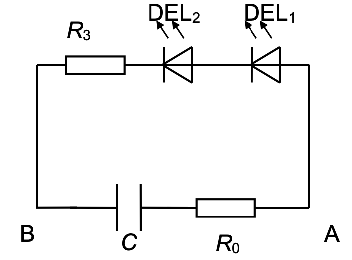
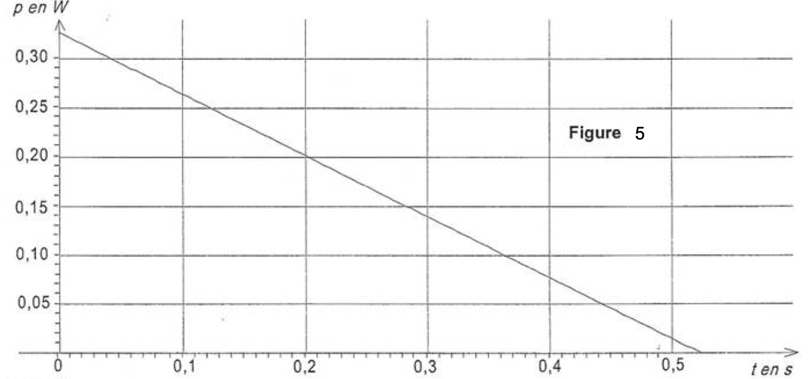
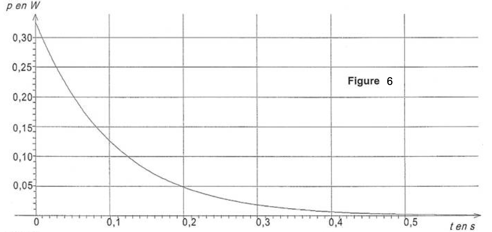
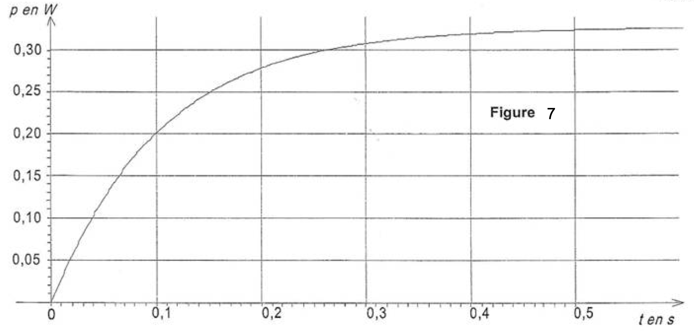

Le modélisme ferroviaire est une activité qui passionne petits et grands.
Ce loisir repose sur la reproduction la plus fidèle possible de l’activité ferroviaire à échelle réduite, le plus couramment à l’échelle 1/87.
L’alimentation des trains miniatures se fait traditionnellement par les rails en $\pu{12 V}$ continu.
Moteurs des locomotives, éclairages des matériels roulants ou fixes, signalisations, aiguillages…, autant d’éléments qui demandent à l’amateur une bonne connaissance de l’électricité et beaucoup d’ingéniosité.
II s’agit d’étudier un dispositif qui permet aux feux arrière de rester allumés lors des coupures d’alimentation au cours des soubresauts du train sur la voie.
Utilisation de lampes à incandescence
Le dernier wagon du train comporte un circuit électrique relié aux deux roues arrière. Ce circuit est composé :
- de deux lampes à incandescence $L_1$ et $L_2$ qui sont les deux feux de fin de convoi ;
- d’un condensateur de capacité : $C = \pu{1000 \mu F}$ ;
- d’un conducteur ohmique de résistance : $R_0 = \pu{10 \Omega}$ ;
- d’une alimentation de force électromotrice : $E = \pu{12 V}$.
Les figures 1 et 2 représentent les deux situations possibles d’éclairement des feux de fin de convoi. Les circuits électriques y sont représentés en gras.
Figure 1 : Sans soubresaut, les contacts roues/rails sont assurés 
Figure 2 : Lors d’un soubresaut, le contact roues/rails est rompu. 
Déplacement du train sans soubresaut
Le circuit électrique de la figure 3 représente les branchements du circuit de la figure 1. On choisit les conventions électriques suivantes (indiquées sur le circuit) :
-
Répondre qualitativement, mais en justifiant, aux deux questions suivantes :
- Pendant la charge du condensateur, les lampes de fin de convoi sont-elles parcourues par un courant ?
- Lorsque le condensateur est totalement chargé, existe-t-il un courant circulant dans la branche AB le contenant ?
-
Déterminer la valeur de la tension aux bornes du condensateur lorsqu’il est complètement chargé. Justifier la réponse.
-
Estimer l’ordre de grandeur du temps de charge du condensateur en s’aidant du calcul de la constante de temps $\tau$ du dipôle $(R_0,C)$.
Déplacement du train avec soubresauts
En prenant de la vitesse, le train peut avoir des soubresauts et le contact train/rails est alors rompu pendant une durée $\Delta t_{\text{soubresaut}}$ de l’ordre du dixième de seconde. Pendant le soubresaut le condensateur se décharge dans les lampes. Sur le circuit électrique de la figure 4 (correspondant à situation de la figure 2), on choisit les conventions électriques suivantes (indiquées sur le circuit) :
Figure 4 
Données
- au début du soubresaut : $u_C(t = 0) = E = \pu{12 V}$ ;
- les lampes $L_1$ et $L_2$ sont identiques et assimilables à deux conducteurs ohmiques de résistances : $R_1 = R_2 = R = \pu{100 \Omega}$ ;
- durée du soubresaut : $\Delta t_{\text{soubresaut}} = \pu{0,10 s}$.
-
Montrer que, pendant le soubresaut, l’équation différentielle relative à la tension $u_C$ aux bornes du condensateur est de la forme : $$ u_C + (2R + R_0) C\, \dfrac{\mathrm{d}u_C}{ \mathrm{dt} } = 0 $$
-
Vérifier que $u_C(t) = A\, e^{ - \dfrac{t}{(2R + R_0) C} }$ est une solution possible de l’équation différentielle précédente et déterminer la valeur de $A$.
-
Donner l’expression de l’intensité $i(t)$ du courant. En déduire le signe de l’intensité $i(t)$.
L’expression de la puissance instantanée consommée par chaque lampe en fonction de l’intensité du courant est donnée par la relation : $p(t) = R\, i^2(t)$.
- On propose sur les figures 5, 6 et 7 de l’annexe, trois graphiques pouvant représenter l’allure de l’évolution de la puissance instantanée consommée par chaque lampe en fonction du temps, au cours de la décharge du condensateur. En utilisant l’expression de $i(t)$ et en justifiant, choisir la seule figure pouvant représenter cette évolution.
L’éclairement de chaque lampe est optimal pour une puissance consommée $P_0 = \pu{0,36 W}$. Toutefois, on considère que l’éclairement est satisfaisant si la puissance consommée est supérieure ou égale à 75 % de la valeur de $P_0$.
-
Donner la durée d’éclairement satisfaisante pour chaque lampe à l’aide d’une détermination graphique sur la courbe choisie à la question 7. (expliciter les étapes du raisonnement).
-
Les lampes vont-elles éclairer de façon satisfaisante pendant toute la durée du soubresaut ?
Utilisation de diodes électroluminescentes
On peut remplacer les lampes $L_1$ et $L_2$ par deux diodes électroluminescentes identiques notées $\text{DEL}_1$ et $\text{DEL}_2$ associées en série avec un conducteur ohmique de résistance $R_3$. Elles ont une durée de vie plus longue et une consommation énergétique plus faible que les lampes à incandescence.
Pendant un soubresaut, le schéma du circuit électrique devient :
Figure 8 
Chaque diode électroluminescente émet de la lumière si elle est parcourue par un courant d’intensité supérieure à une intensité seuil $I_{\text{seuil}} = \pu{2,0 mA}$. Au début du soubresaut, à $t = \pu{0 s}$, l’intensité prend sa valeur maximale $I_{\text{max}} = \pu{6,0 mA}$.
Données
- Conducteur ohmique de résistance $R_3 = \pu{1,5 k\Omega}$ ;
- On admet que la durée d’éclairement des diodes est de l’ordre de $$\Delta t = (R_3+R_0)C \, \ln \left( \dfrac{I_{\text{max}}}{I_\text{seuil}} \right)$$
-
Montrer par une analyse dimensionnelle que $\Delta t$ a bien la dimension d’un temps.
-
Calculer $\Delta t$ et indiquer si les diodes électroluminescentes vont éclairer pendant toute la durée du soubresaut.
Annexe
Puissance instantanée consommée par chaque lampe en fonction du temps $p = f(t)$.   
Corrigé
- Exercice corrigé en classe